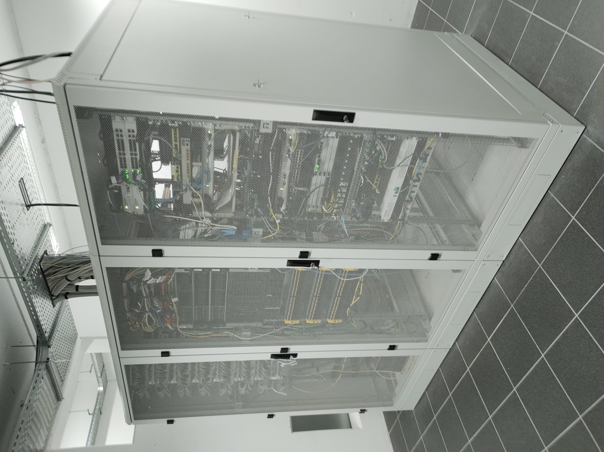

Vandaag toen ik aan kwam was ik best zenuwachtig maar dat bleek al zeer snel voor niets nodig te zijn. Eerst ontmoette ik Paul dat is de IT verantwoordelijke en die gaf mij eerst een rondleiding door het bedrijf. Hij liet me zien waar de servers waren en waar ik drinken kon halen. Daarna maakte ik kennis met Martin en Jordi. Martin doet vooral de support en Joeri doet andere dingen. Nadien heb ik mijn eigen laptop gekregen voor de week en die heb ik dan ineens ingesteld. Daarna kwam er een man binnen en die zijn laptop werkte niet dus ik en Martin hebben hem een vervang toestel gegeven en dat ingesteld. Toen kwam er een mevrouw met een probleem, ik en Martin hebben dat probleem opgelost. Ze moest gewoon even uitloggen en dan weer aanmelden.
Om 12 uur was het middagpauze en die duurde tot 13 uur. Na de middag heb ik een laptop ingesteld voor een nieuwe werknemer. Daarna heb ik van Joeri een uitleg gekregen hoe een programma werkt. Dat programma zorgt ervoor dat de beheerders instellingen kunnen aanpassen op de laptops van gebruikers. Vandaag moesten en nieuwe fonts op iedereen hun laptop gedownload worden maar we hadden het eerst getest op het IT team vooraleer we het op iedereen hun laptop zetten. Als laatste heb ik een andere laptop ingesteld voor iemand die een nieuwe laptop nodig had. Dat instellen bestond vooral uit updates uitvoeren en de gebruiker inloggen op de nodige programma’s. Toen was hebt 17 uur en tijd om naar huis te gaan.
Dit zijn de servers:
